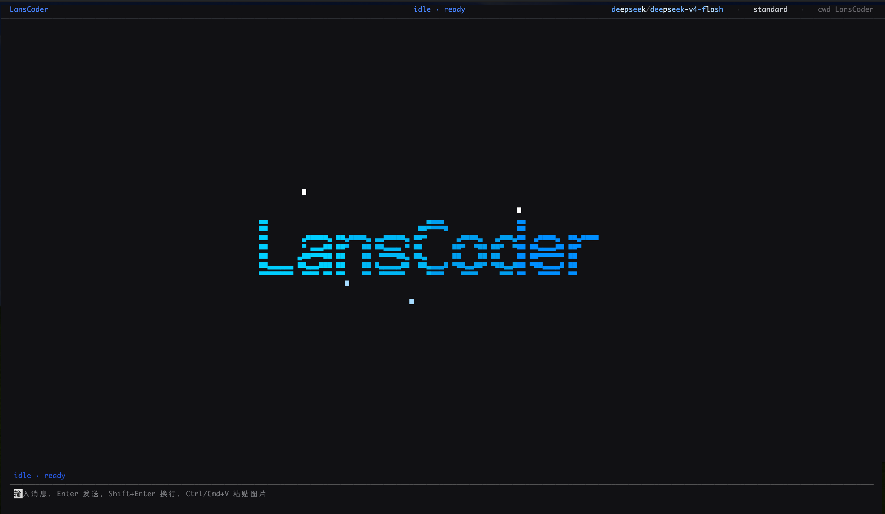

LansCoder is a locally-runnable Python coding agent with ~30k lines of clean, well-structured Python. Real enough to use daily, small enough to understand completely.

Most coding agents are massive codebases. LansCoder takes the opposite approach: strict layering, clear module boundaries, and solid test coverage. Every module's job is obvious. It's built to be studied, hacked on, and extended.
Understands your codebase, edits files, and runs shell commands. 40+ built-in tools cover file ops, search, git, and more.
OpenAI-compatible and Anthropic providers supported. Hot-switch models mid-session without restarting.
Standard, aggressive, or bypass modes. Syntax-highlighted diffs previewed before every file mutation — even in high-permission mode.
Built on Textual. Streams reasoning, tool calls, and results in real time. Autocomplete, session picker, diff review — all in the terminal.
Create, resume, fork, and share sessions. Persisted as JSONL. Full context recovery on restart.
Connect external tool servers via Model Context Protocol. Extend the agent's capabilities with custom tools.
Strict layering, clear dependency rules. Each module has one job.
Install LansCoder with pipx (recommended) or pip:
Generate a config file, then edit it with your API key:
Set your default model and provider credentials:
Run from your project directory: